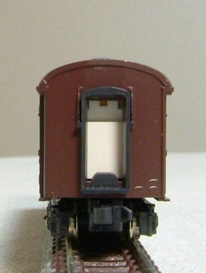

オハ35戦後型・スハ42
KATOオハフ33の改造です。
KATOのオハ35系戦後型は、オハ35が絞り折妻・オハフ33がキノコ折妻になっています。
オハフ33を改造し、キノコ折妻のオハ35とスハ42を製作しました。
KATOのオハ35系戦後型は、オハ35が絞り折妻・オハフ33がキノコ折妻になっています。
オハフ33を改造し、キノコ折妻のオハ35とスハ42を製作しました。


まずは形式写真から。
スハ42はドア違いで2タイプ、オハ35は青色をピック。ほかにもまだいますが…
TR23Gがついてしまっているオハ35の台車(なぜに…)は、TR34に交換してます。TR34不足気味。
あと、オハ35の室内は灰色塗装・シートをカッティングシートで貼ってあるのですが、意外と見えますね。
ちらりと見えるフチの灰色がやりたかったのです。
スハ42のステップ塗らなきゃ…。

オハフ33の車掌室部分の窓を拡げ、
別のオハ35から切り出した窓枠をはめ込みます。
スハ42は、台車をTR47に交換します。
別のオハ35から切り出した窓枠をはめ込みます。
スハ42は、台車をTR47に交換します。
加工の際の一工夫として、0.3㎜のプラバンを瞬間接着剤で裏側から貼り付けてやっています。
瞬間接着剤はそんなに固くつかないので、はめ込んで固着後にデザインナイフで簡単にはがすことができます。
瞬間接着剤はそんなに固くつかないので、はめ込んで固着後にデザインナイフで簡単にはがすことができます。

妻面です。
キャンバス屋根と鋼板屋根を作り分けてみました。
キャンバス押さえは、イエロートレインのパーツです。
キャンバス屋根と鋼板屋根を作り分けてみました。
キャンバス押さえは、イエロートレインのパーツです。
キノコ折妻の印象的なアングルから。
スハ43系のように屋根が揃います。
塗色はマニ36同様、KATO製品に合わせて調色したぶどう色2号です。